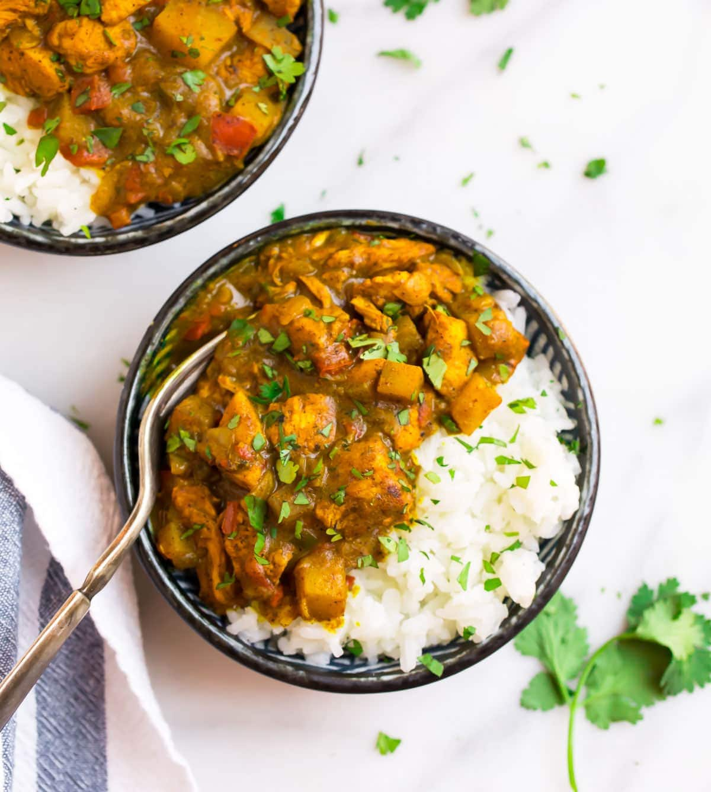

Jamaican Style Curry Chicken

This recipe is rich and hearty, with flavor that is great. You can even try a variety of hot peppers to change the flavor, or even sweet bell peppers.
Ingredients
- 1/4 cup vegetable oil
- 1 onion, chopped
- 1 tomato, chopped
- 2 slices habanero pepper (optional)
- 1 garlic clove, chopped
- 2 tablespoons Jamaican-style curry powder
- 1/4 teaspoon ground thyme
- 2 skinless, boneless chicken breast halves, cut into 1 1/2 inch pieces
- 1 cup water
- 1/2 teaspoon salt, or to taste
Steps
- Heat vegetable oil in a skillet over medium-high heat.
- Add onion, tomato, habanero pepper, garlic, curry powder, and thyme and cook.
- Stir until onion is golden, about 7 minutes.
- Stir in chicken and cook until chicken is lightly browned, about 5 minutes.
- Pour water into skillet, reduce heat to low and cover.
- Simmer until chicken is no longer pink at the center, about 30 minutes.
- Season with salt, and serve.